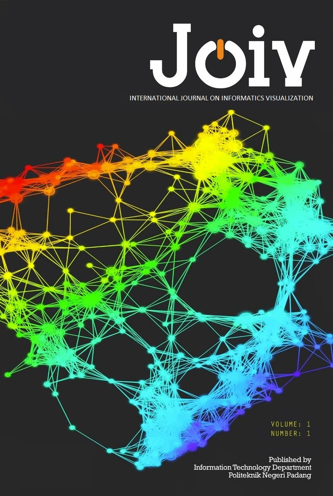

Home
Profil
Sejarah
Visi dan Misi
Tujuan Strategis
Sasaran Strategis
Struktur Organisasi
Pimpinan Jurusan
Dosen / Staf Pengajar
Fasilitas
Program Studi
D4 Teknologi Rekayasa Perangkat Lunak
D4 Animasi
D3 Manajemen Informatika
D3 Teknik Komputer
D2 Administrasi Jaringan Komputer
D3 Sistim Informasi (PSDKU Tanah Datar)
D3 Manajemen Informatika (PSDKU Pelalawan)
D3 Teknik Komputer (PSDKU Solok Selatan)
Akademik
Akreditasi
Kalender Akademik
SOP – Panduan
Uang Kuliah Tunggal
Prestasi Mahasiswa
Penelitian
Jurnal
Academy
Hubungi Kami
Hubungi Kami
Saran dan Masukan
Chatbot Interaktif
Jurnal
Home

JOIV : International Journal on Informatics Visualization
Link :
https://joiv.org/